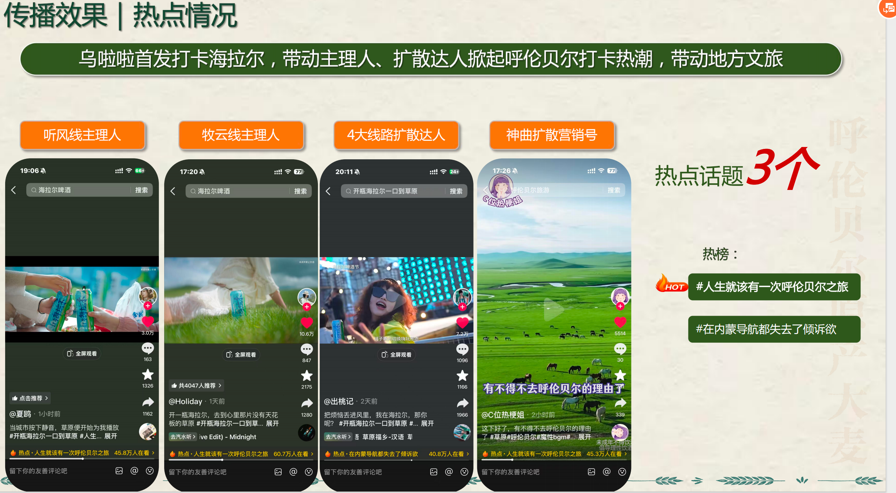
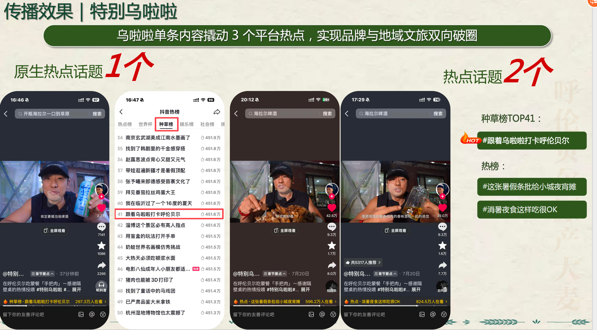
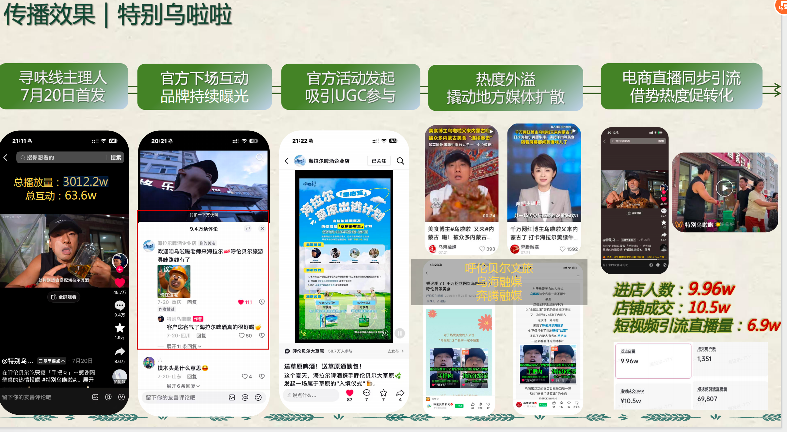

01 / 读需求
内容规划
根据客户目标、品类和节点，拆解可执行的内容营销方向与达人沟通重点。
王苑竹｜短视频内容编导。以达人内容为抓手，连接客户需求、平台情绪与实际传播结果。
根据客户目标、品类和节点，拆解可执行的内容营销方向与达人沟通重点。
对齐内容方向、脚本逻辑与修改建议，让产品进入达人原生的体验和表达。
结合平台热点和内容表现，为后续选题、内容迭代及转化承接提供依据。
2026 CNY 项目总曝光
103w+ 项目总互动
项目总曝光（达 KPI 610%）
50.4w 项目总互动
项目总曝光
254.33w 项目总互动
以上为本人参与项目的阶段数据；海拉尔项目的达人内容、热点与转化路径见下方主案例。
以“草原出逃”进入都市用户的旅行与职场情绪：从达人打卡引起讨论，到热点扩散，再把关注带向店铺和直播间。
在草原旅游旺季里，内容从城市压力切入，把草原、蒙餐、音乐和日落转化为用户愿意转发、愿意跟拍、也愿意出发的具体场景。



特别乌啦啦的首发内容既带动种草榜曝光，也通过品牌互动、UGC 参与和地方媒体扩散，把讨论延续到店铺与直播场景。
参与项目沟通，根据客户需求规划内容营销方向，并整理达人内容的核心表达和落地要求。
对接达人内容，解释内容方向、脚本逻辑和修改建议，推进内容在创作表达与品牌诉求之间达成一致。
结合抖音热点、内容反馈和过往经验，沉淀可用于下一阶段选题、达人沟通和内容承接的判断。